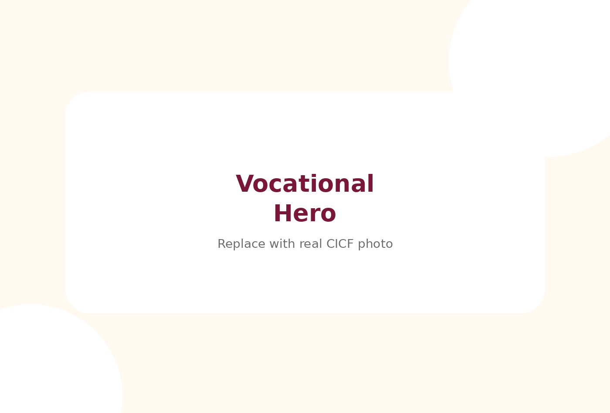
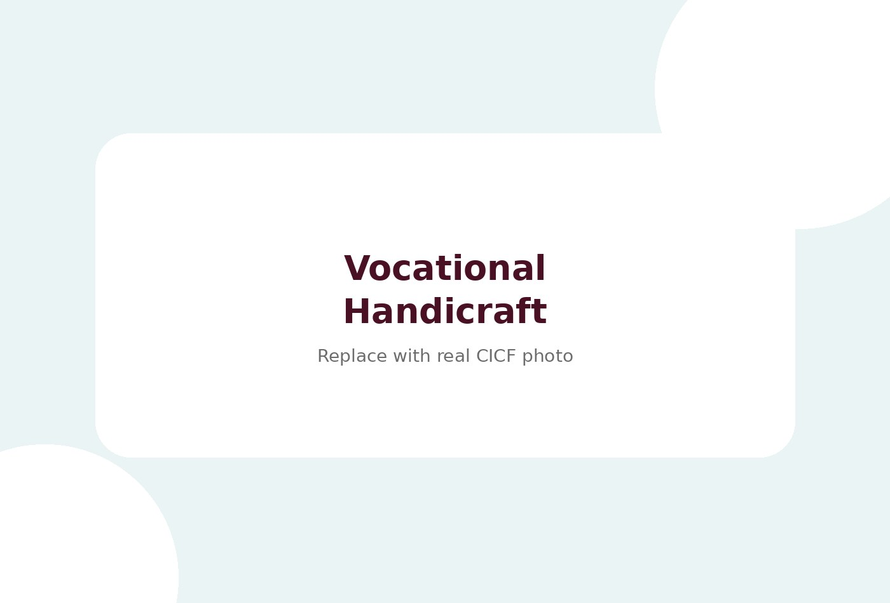
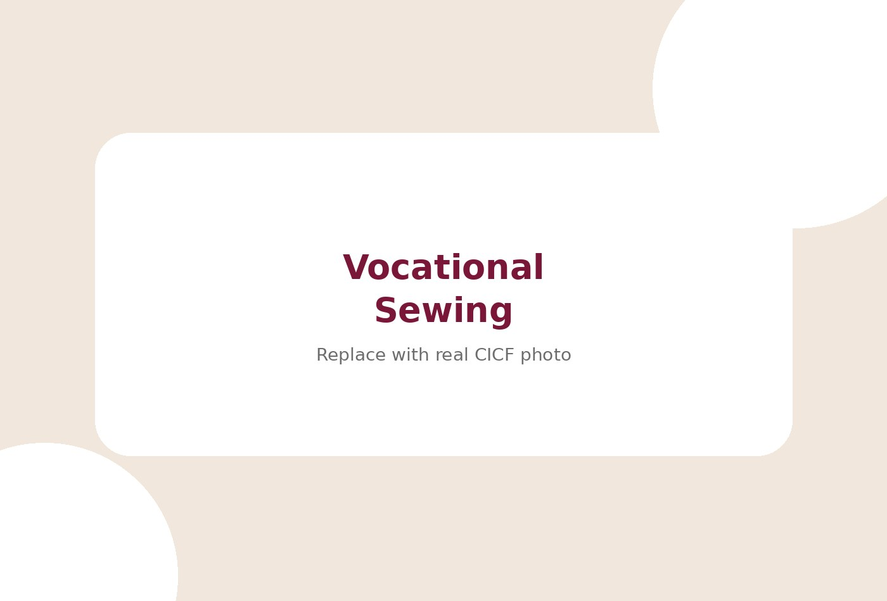

Creative Impact for Children Foundationক্রিয়েটিভ ইমপ্যাক্ট ফর চিলড্রেন ফাউন্ডেশন
Creative Vocational & Extra-Curricular Centreক্রিয়েটিভ ভোকেশনাল ও এক্সট্রা-কারিকুলার সেন্টার
Developing practical skills, confidence, creativity and meaningful participation beyond the classroom.ক্লাসরুমের বাইরে ব্যবহারিক দক্ষতা, আত্মবিশ্বাস, সৃজনশীলতা ও অর্থবহ অংশগ্রহণ গড়ে তোলা।
Explore Activitiesকার্যক্রম দেখুনEnquire About the Programmeপ্রোগ্রাম সম্পর্কে জানতে চাইSkills for Everyday Lifeদৈনন্দিন জীবনের দক্ষতা
Practical skillsব্যবহারিক দক্ষতাCreative participationসৃজনশীল অংশগ্রহণIndependenceস্বাধীনতা


A dedicated CICF wingCICF-এর একটি বিশেষায়িত উইং
Overviewওভারভিউ
Practical learning beyond the classroomক্লাসরুমের বাইরে ব্যবহারিক শেখা
Creative Vocational & Extra-Curricular Centre helps children and young learners explore practical activities, creativity, life skills, pre-vocational learning and social participation. The focus is on exposure, practice, confidence and independence, without making employment-outcome claims.ক্রিয়েটিভ ভোকেশনাল ও এক্সট্রা-কারিকুলার সেন্টার শিশু ও শিক্ষার্থীদের ব্যবহারিক কাজ, সৃজনশীলতা, জীবন দক্ষতা, প্রি-ভোকেশনাল শেখা ও সামাজিক অংশগ্রহণ অন্বেষণে সাহায্য করে। এখানে কর্মসংস্থানের ফলাফলের দাবি নয়, পরিচিতি, অনুশীলন, আত্মবিশ্বাস ও স্বাধীনতায় ফোকাস করা হয়।
05
This page is translation-ready. Edit the English and Bengali spans together when programme details change.এই পেজটি translation-ready। প্রোগ্রামের তথ্য বদলালে English ও Bengali span একসাথে সম্পাদনা করুন।
Who We Supportআমরা যাদের সহায়তা করি
Built around children, families and readinessশিশু, পরিবার ও প্রস্তুতিকে কেন্দ্র করে
The examples below are guidance only. Admission and support decisions should always follow discussion with the CICF team.নিচের উদাহরণগুলো নির্দেশনা মাত্র। ভর্তি ও সহায়তার সিদ্ধান্ত সবসময় CICF টিমের সাথে আলোচনা করে নেওয়া উচিত।
Key Programmes / Servicesমূল প্রোগ্রাম / সেবা
What families can enquire aboutপরিবার যে বিষয়গুলো জানতে পারে
Practical routines that support independence, participation and responsibility.স্বাধীনতা, অংশগ্রহণ ও দায়িত্বে সহায়ক ব্যবহারিক রুটিন।
Gentle introduction to work-like tasks and pre-vocational habits.কাজ-ধর্মী কাজ ও প্রি-ভোকেশনাল অভ্যাসের কোমল পরিচিতি।
Fine motor, planning, creativity and task completion through craft activities.হস্তশিল্পের মাধ্যমে ফাইন মোটর, পরিকল্পনা, সৃজনশীলতা ও কাজ সম্পন্ন করা।
Basic digital familiarity and guided computer activities where appropriate.উপযোগী হলে মৌলিক ডিজিটাল পরিচিতি ও গাইডেড কম্পিউটার কার্যক্রম।
Creative expression, recreation and group participation.সৃজনশীল প্রকাশ, বিনোদন ও গ্রুপ অংশগ্রহণ।
Group activities that encourage communication, turn-taking and confidence.যোগাযোগ, পালা নেওয়া ও আত্মবিশ্বাস বাড়াতে গ্রুপ কার্যক্রম।
Why This Programme Mattersএই প্রোগ্রাম কেন গুরুত্বপূর্ণ
Meaningful progress starts with the right environmentউপযুক্ত পরিবেশ থেকেই অর্থবহ অগ্রগতি শুরু
Practical skills give learners more ways to participate in home, school and community life. CICF treats these activities as meaningful learning experiences, not as guaranteed employment pathways.ব্যবহারিক দক্ষতা শিক্ষার্থীদের বাড়ি, স্কুল ও কমিউনিটি জীবনে অংশ নেওয়ার আরও উপায় দেয়। CICF এসব কার্যক্রমকে অর্থবহ শেখার অভিজ্ঞতা হিসেবে দেখে, নিশ্চিত কর্মসংস্থান পথ হিসেবে নয়।
Our Approachআমাদের পদ্ধতি
- 01Createতৈরি করা
- 02Learnশেখা
- 03Practiseঅনুশীলন
- 04Participateঅংশগ্রহণ
- 05Build confidenceআত্মবিশ্বাস গড়া
- 06Develop independenceস্বাধীনতা বিকাশ
Real Photo / Activity Sectionবাস্তব ছবি / কার্যক্রম
Skills for Everyday Lifeদৈনন্দিন জীবনের দক্ষতা
Use real CICF photos here when available and permission has been obtained. The current files are editable placeholders in the assets folder.অনুমতি পাওয়া গেলে এখানে বাস্তব CICF ছবি ব্যবহার করুন। বর্তমান ফাইলগুলো assets ফোল্ডারে সম্পাদনাযোগ্য প্লেসহোল্ডার।

Programme Highlightsপ্রোগ্রামের হাইলাইট
Designed for participation, confidence and careঅংশগ্রহণ, আত্মবিশ্বাস ও যত্নের জন্য ডিজাইন
Typical Activitiesসাধারণ কার্যক্রম
What children or families may experienceশিশু বা পরিবার যা অভিজ্ঞতা করতে পারে
Activities are adapted to the child, group, programme type and available schedule. Exact routines can be edited later as CICF confirms details.কার্যক্রম শিশু, গ্রুপ, প্রোগ্রাম টাইপ ও উপলভ্য সময়সূচি অনুযায়ী সাজানো হয়। CICF তথ্য নিশ্চিত করলে সুনির্দিষ্ট রুটিন পরে সম্পাদনা করা যাবে।
Createতৈরি করাLearnশেখাPractiseঅনুশীলনParticipateঅংশগ্রহণBuild Confidenceআত্মবিশ্বাস গড়াDevelop Independenceস্বাধীনতা বিকাশComputer activitiesকম্পিউটার কার্যক্রমRecreationবিনোদন
Environment / Facilitiesপরিবেশ / সুবিধা
Spaces that support calm, safe participationশান্ত ও নিরাপদ অংশগ্রহণে সহায়ক স্পেস
Replace these editable notes with confirmed facility descriptions and photos before publishing detailed facility claims.বিস্তারিত সুবিধা সম্পর্কিত দাবি প্রকাশের আগে নিশ্চিত বর্ণনা ও ছবি দিয়ে এই নোটগুলো বদলান।
Editable note: describe the actual room, equipment or environment after confirming details.সম্পাদনাযোগ্য নোট: নিশ্চিত তথ্য অনুযায়ী বাস্তব রুম, উপকরণ বা পরিবেশ বর্ণনা করুন।
Editable note: describe the actual room, equipment or environment after confirming details.সম্পাদনাযোগ্য নোট: নিশ্চিত তথ্য অনুযায়ী বাস্তব রুম, উপকরণ বা পরিবেশ বর্ণনা করুন।
Editable note: describe the actual room, equipment or environment after confirming details.সম্পাদনাযোগ্য নোট: নিশ্চিত তথ্য অনুযায়ী বাস্তব রুম, উপকরণ বা পরিবেশ বর্ণনা করুন।
Editable note: describe the actual room, equipment or environment after confirming details.সম্পাদনাযোগ্য নোট: নিশ্চিত তথ্য অনুযায়ী বাস্তব রুম, উপকরণ বা পরিবেশ বর্ণনা করুন।
Parent or Family Collaborationঅভিভাবক বা পরিবার সহযোগিতা
Families are part of the support pathwayপরিবার সহায়তার পথের অংশ
Families can discuss which practical activities match a learner’s interests, strengths and current readiness.শিক্ষার্থীর আগ্রহ, শক্তি ও বর্তমান প্রস্তুতির সাথে কোন ব্যবহারিক কার্যক্রম মেলে তা পরিবার আলোচনা করতে পারে।
🛠️
Want to discuss fit before applying?আবেদনের আগে উপযোগিতা নিয়ে কথা বলতে চান?
Use the assessment, admission and contact pages that already exist on the website.ওয়েবসাইটে থাকা assessment, admission এবং contact পেজ ব্যবহার করুন।
Galleryগ্যালারি
Practical Skill-Building at Creativeক্রিয়েটিভে ব্যবহারিক দক্ষতা উন্নয়ন
Click any image to open the lightbox. Use arrow keys, Escape, or mobile swipe while viewing.লাইটবক্স খুলতে যে কোনো ছবিতে ক্লিক করুন। দেখার সময় arrow key, Escape বা mobile swipe ব্যবহার করুন।
Related CICF Wingsসম্পর্কিত CICF উইংস
Explore More of CICFCICF-এর আরও উইং দেখুন
Enquiry CTAঅনুসন্ধান CTA
Explore meaningful skill-building opportunities.অর্থবহ দক্ষতা উন্নয়নের সুযোগ সম্পর্কে জানুন।
Contact CICF to discuss admission, assessment, programme suitability or a visit.ভর্তি, এসেসমেন্ট, প্রোগ্রামের উপযোগিতা বা ভিজিট নিয়ে আলোচনা করতে CICF-এর সাথে যোগাযোগ করুন।
Contact / Visit CTAযোগাযোগ / ভিজিট CTA
Speak with the CICF teamCICF টিমের সাথে কথা বলুন
Phone, WhatsApp and email buttons are preserved across the page for quick enquiries.দ্রুত অনুসন্ধানের জন্য ফোন, WhatsApp ও email বাটন পেজজুড়ে রাখা হয়েছে।